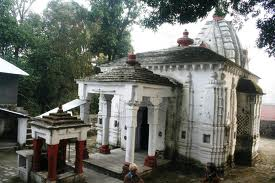
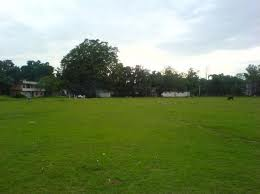
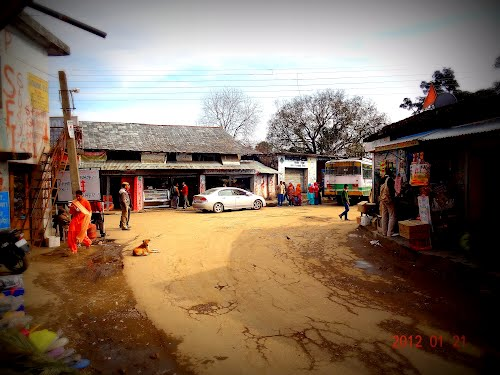
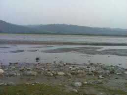
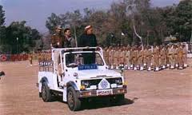
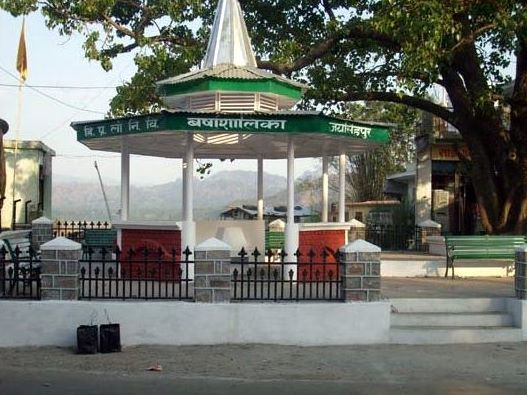
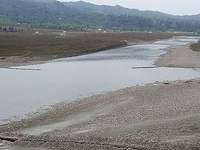
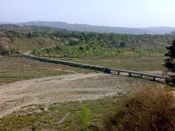
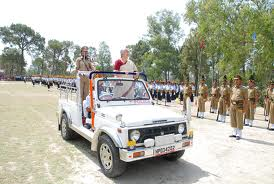
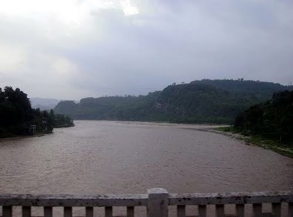

WELCOME TO
KANGRA VALLEY
INTRODUCTION
Jaisinghpur is a small town and Tehsil in Kangra district of Himachal Pradesh, India. Population of Jaisinghpur Town is 1,273 and overall population of Jaisinghpur tehsil is 58,623. It was named after the name of Katoch king of Princely ordered state Kangra-Lambagraon, Maharaja Jai Singh. It is situated on the bank of river Beas. It is known for its "chaugan." There are several notable temples in the town such as Janaki Nath temple, Radhey Krishan temple near Bus Adda,Laxmi Narayan temple, Baba Mani Ram Temple, Neel Kanth Mahadev Temple, Dhudu Mahadev Mandir, Guga temple (Called Gangoti near Sheetla Mata Mandir), Sheetla Mata temple, a Dargah midtown, popularly known as Baba Shah Mast Ali Dargah and a Gurudwara on Jaisinghpur Lambagoan road. Sheetla Mata temple is famous temple of the town on Tinbar-Palampur road. Another famous temple is Jankinath temple.
There are many natural water resources in the town. 'Naoun' is favorite place for all boys to have fun by swimming in summer, however it serves the major water need of people. Jaisinghpur is also famous for its vegetable production on the banks of Beas river the spot is popularly known as Bhuare ke Bagh. Once Jaisinghpur was also famous for vegetable growing on the banks of river Beas i.e. popularly known as bhuaray ka bagh. But nowadays the growing of crops including vegetables has been stopped in Jainsinghpur and entire adjoining area because of the increase of stray animals, monkeys, wild pigs, rabbits, deer’s (Kakkar, Barahsinga and neel gaye), which spoil crops completely.
The menace of wild and stray animals has increased nowadays manifold probably due to the fact that tigers/leopards which were responsible for keeping such animals under control have been killed by local poachers.
beside Jaisinghpur is also famous for its annual fair also known as holian which are celebrated in the month of march during the colour festival of holi. The Holian of Jaisinghpur are famous for its mouth watering aalu chholey and Jalebi and continues for almost a week. Holding of Kushti (wrestling) at Dargah during Holis is an annual affair watched by several visitors.
